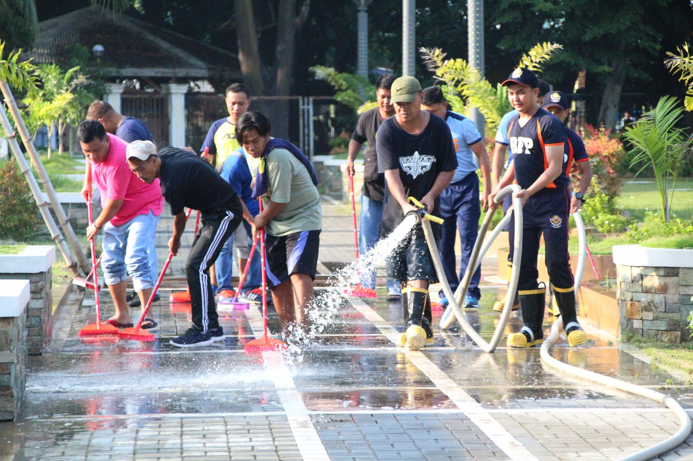

Barangay SP404 Award
The Department of the Interior and Local Government-Region 1 (DILG) recognizes Barangays SP404 in the region and confers 2022 Lupong Tagapamayapa Incentives and Awards (LTIA) via virtual ceremony last August 20, 2022. DILG Regional Director Jamesh Serrano congratulated the regional winners which had shown great performance and challenged the remaining 1,299 barangays to aim for excellence in exercising their duties and functions as justice bearers in their communities. “Congratulations to all the winners! Undeniably, the successful conduct of this assessment is a proof that our government, even in the barangay level, is doing its best to execute its assigned functions despite of the extra challenges and inconveniences that this pandemic has brought to all of us,” Famacion said.
Barangay SP404 Cleanup Drive
The Municipal Environment and Natural Resources Office is in charge of formulating measures for the consideration of the Mayor and Sanggunian; and provides technical assistance in carrying out measures to ensure the delivery of basic services and provision of adequate facilities relative to environment and natural resources services as provided by the rule of law. The office develops plans and strategies on environment and natural resources programs and projects.
Barangay SP404 are to enjoy fresh air, safe water, and clean, fertile soils. We are to balance our current needs and the capacity of our environment. Finally, as we owe our current resources from our future, we are to work out that in meeting our current needs, we are not sacrificing our future. The Barangay SP404 Local Government stands by that mandate.
Description: The right to a clean environment with an environmentally sound approach in adopting enhancement strategies in waste management and disposal, and the protection and promotion of health of the people of the Barangay
Barangay SP404 Programs
Driven by the vision to be a “Safe and Clean”, SP404 gives priority to good governance, character formation, knowledge creation, and habitability. Take a look on all the events that reflect Barangay SP404’s visions.

Jobs and Livelihood
The town focuses on giving livelihood to its people by helping them maximize all the town’s agricultural resources in a sustainable way.

Environment and Cleanliness
Acquired its first-class municipality status not only from the great administration work of its LGU but also from giving priority on the cleanliness and habitability of its public areas.

Public Order and Safety
It is the task of the Public Order and Safety unit to make sure that the town is free from chaos and crime, and that the people feel safe even if they are outside the safety of their homes
Message from the Barangay Chairman

Dear fellow Barangay SP404's,
As I pen this message, I cannot help but reminisce where we all started. Driven by desire to be of integrity, inspired by vision to be excellent, and motivated by our deep commitment to God, we took the leap of faith. We dreamed the unheard: to be a University Town.
The power of we cannot be overemphasized. It is through our collaborations that realize our vision to be a University Town. It is our dedication to our mission that allows us to soar higher and dream boldly. It is through our collective action that enables us to reach our goals, and live our core values.
The Barangay SP404 is a product of the power of we. Furthermore, and most specially, through our ingenious, creative and effective programs, we form conscientious citizens guided by sound conscience.So, let us hold on in this dream. When we stop dreaming, then our lives cease to have meaning.